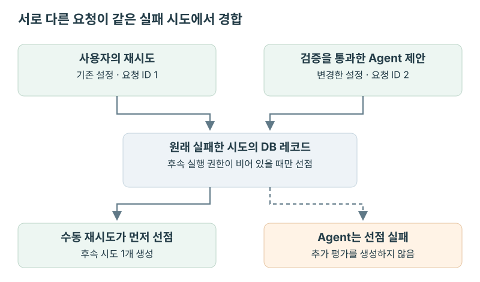

VLOPS · Agent 제안의 검증과 후속 실행 통제
사용자와 Agent가 동시에 재시도하면, GPU 작업은 몇 개 시작될까
평가가 실패하면 사용자는 같은 설정으로 재시도를 누를 수 있고, Agent는 동시성을 낮춰 다시 실행하자고 제안할 수 있었다. 둘 다 유효한 요청이지만 모두 실행하면 같은 실패 때문에 GPU 작업이 두 개 시작된다. 요청 ID도 내용도 다르므로 중복 요청 검사로는 막을 수 없었다. 실패한 실행 시도에 대해 수동 재시도와 Agent 중 하나만 후속 실행을 만들도록 구현했다.
서로 다른 요청이 같은 실패를 복구할 때
NAVER Cloud에서 VLOps의 자동 복구 Agent를 구현했다. VLOps에서 수동 재시도는 기존 평가에 새 실행 시도를 추가했고, Agent가 설정을 바꿔 제출하면 별도의 평가를 생성했다. 저장되는 평가가 다르므로 기존 평가의 시도 번호에 유일성 제약을 두는 것만으로는 중복 실행을 막을 수 없었다.
그래서 원래 실패한 시도 레코드에 선점한 요청의 ID를 저장하기로 했다. 수동 재시도와 Agent의 새 평가 제출이 모두 같은 레코드를 선점하도록 한 것이다. Agent가 로그를 조사하는 동안 사용자가 먼저 재시도할 수도 있으므로, 선점 여부는 실제 제출 직전에 확인해야 했다.
CAS로 수동 재시도와 Agent의 경합 처리
실패한 시도의 레코드에 선점자 ID를 저장하고, 값이 비어 있을 때만 갱신하는 CAS를 구현했다. 수동 재시도와 Agent 조치가 각각 자신의 ID로 같은 레코드를 갱신하므로 먼저 성공한 쪽만 후속 실행을 만들 수 있었다. 그 전에 해당 실패가 여전히 최신 시도인지도 확인해, 이미 다음 시도가 생긴 평가에 오래된 제안을 적용하지 않도록 했다.

-- 후속 실행 선점 조건을 일반화한 의사코드
UPDATE failed_attempt
SET followup_owner = :claim_id
WHERE id = :source_attempt_id
AND followup_owner IS NULL;
-- 갱신에 성공했거나 같은 claim_id가 저장돼 있으면 계속 처리한다.
-- 다른 claim_id가 저장돼 있으면 실행하지 않는다.갱신한 행이 없으면 저장된 선점자 ID를 읽었다. 같은 ID라면 이전 호출에서 선점한 요청이 다시 들어온 것이므로 계속 처리했다. 다른 ID라면 수동 재시도에는 충돌을 반환하고, Agent 조치는 실행하지 않았다.
선점 이후의 제출 실패
선점 후 제출이 실패한 경우에는 후속 Workflow의 실행 레코드가 저장됐는지 확인했다. 아직 레코드가 없을 때만 선점을 해제했다. 이미 저장됐다면 응답만 실패했을 수 있으므로 선점을 유지하고, 같은 요청이 다시 들어왔을 때 기존 실행을 사용하도록 했다.
동시에 제출한 두 요청의 결과
경합 테스트에서는 두 스레드를 barrier에서 동시에 출발시켰다. 한쪽은 수동 재시도를 요청하고 다른 쪽은 평가 동시성을 바꾼 Agent 제안을 제출했다. 수동 요청이 먼저 선점하면 기존 평가에 두 번째 시도만 생겨야 했고, Agent가 먼저 선점하면 원래 시도는 하나인 채 새 평가만 생겨야 했다. 두 요청이 모두 실행되거나 모두 실패하지 않고, 정확히 한쪽만 후속 실행을 생성하는지 확인했다.
이 테스트는 GPU를 실제로 실행하는 대신 제출 요청을 기록하는 테스트 대역을 사용했다. DB의 평가 수, 시도 수, 선점자 ID를 함께 검사해 후속 실행이 한쪽에서만 생성됐는지 검증했다.
Agent가 조사할 정보와 제안할 조치
Agent는 자동 복구를 켠 평가가 실패했을 때 호출했다. 서빙 실패로 평가를 시작하지 못한 경우도 포함했지만, 사용자가 취소한 실행은 재시도하지 않았다. 평가가 성공한 뒤 자원 회수만 실패한 경우에도 평가를 다시 실행할 필요는 없으므로 Agent를 호출하지 않았다.
모델에는 실패한 평가의 설정, 작업별 상태, 이전 복구 이력과 서빙·평가 로그를 전달했다. 추가 로그가 필요하면 해당 시도에 속한 작업에서 지정한 구간만 읽도록 했다. 비밀값은 모델 입력에서 마스킹하고, 조사 단계 수와 전달할 데이터 크기에도 제한을 뒀다.
Agent는 retry, resume, 설정을 바꾼 새 평가 제출, no action 중 하나를 제안했다. 제안은 곧바로 실행하지 않고 검증기와 실행 서비스를 거치도록 했다. 예를 들어 평가가 아예 시작되지 않았다면 재개할 산출물이 없으므로, resume을 제안해도 일반 재시도로 처리했다.
실환경에서는 Agent를 배포하고 실제 Qwen 엔드포인트의 JSON 응답을 확인했다. 조사부터 후속 평가 성공까지의 전체 흐름은 scripted model과 fake provider를 사용한 Temporal 통합 테스트로 검증했다.
평가 대상은 고정하고 실행 설정만 변경
모델이나 벤치마크를 바꿔 평가에 성공하더라도 원래 요청을 복구한 것은 아니었다. 그래서 평가 대상은 고정하고, 명시적으로 허용한 실행 설정만 바꿀 수 있도록 검증기를 구현했다.
| 범위 | 허용한 변경 예시 | 보호한 항목 |
|---|---|---|
| 실행 환경 | GPU 자원 유형 | 제공자 종류와 그 밖의 환경 설정 |
| 모델 서빙 | 병렬화 크기, GPU 메모리 사용 비율, 배치 한도, 준비 대기 시간 | 모델 경로·이름, 생성 내용에 영향을 주는 설정 |
| 평가 실행 | 평가 도구의 규칙이 허용한 동시성 등 실행 인자 | 벤치마크, 모델, 평가 엔진, 평가 소프트웨어 지정 |
공통 검증기는 모델·벤치마크 등의 고정 항목과 GPU 자원 유형을 검사했고, 서빙·평가 도구의 실행 인자는 도구별 규칙으로 검증했다. 서빙의 배치 한도 변경은 허용했지만, 평가 입력에 영향을 줄 수 있는 최대 모델 입력 길이 변경은 막았다. 변경 규칙이 등록되지 않은 도구의 인자도 수정할 수 없도록 했다.
Agent에게 전달할 변경 가능 항목도 검증기의 규칙에서 생성했다. 프롬프트와 검증 코드에 허용 목록을 따로 관리하면 둘이 달라질 수 있기 때문이었다. 제안이 들어오면 검증기는 원본 요청과 비교해 허용 여부와 위반 항목을 반환했고, 실행 서비스는 승인된 변경 내용과 새 평가 ID를 기록했다.
평가가 새로 생성돼도 유지되는 복구 한도
한 실패에서 실행을 하나만 만들더라도 자동 복구가 끝없이 반복될 수는 있었다. 설정을 바꾼 새 평가가 또 실패했을 때 복구 횟수를 0부터 세면, Agent는 매번 한도를 새로 받게 되기 때문이다.
Agent가 만든 평가에는 부모 평가 ID, 최초 평가 ID, 해당 Agent 조치 ID를 함께 저장했다. 복구 횟수는 최초 평가를 기준으로 관리하고, 새 평가에도 같은 한도를 적용했다. 조사 중에 다른 조치가 실행될 수 있으므로 제출 직전에 남은 횟수를 다시 확인했다.
실행할 Agent 조치에는 최초 평가 ID를 기준으로 순번을 부여하고, 두 값의 조합에 유일성 제약을 뒀다. 동시 요청이 같은 순번을 차지하면 다시 조회하도록 했으며, 다음 순번이 한도를 넘으면 실행하지 않았다. 이때 이미 후속 실행을 선점했다면 선점을 해제했다.
한도를 1회로 둔 테스트에서는 Agent가 설정을 바꾼 새 평가를 만든 뒤 그 평가도 실패시켰다. 이미 한 번 복구했으므로 Agent가 다시 호출되지 않는지 확인했다. 제출 직전에 한도가 소진된 경우에는 Agent 조치를 건너뛰고 선점을 해제해, 사용자의 수동 재시도는 가능하도록 했는지도 검사했다.
조사부터 후속 평가까지의 통합 검증
Temporal 테스트 환경에서는 첫 평가를 실패시키고, scripted model이 평가 로그와 서빙 로그를 읽은 뒤 재시도를 제안하도록 구성했다. 모델의 응답을 미리 정해 두고, 조사 결과가 검증과 실행 서비스를 거쳐 다음 평가에 반영되는지 확인한 테스트였다.
중간에는 JSON 형식이 아닌 응답과 존재하지 않는 도구 호출도 넣었다. 조사 코드는 오류를 모델의 다음 입력에 포함해 정해진 단계 수 안에서 다시 응답하도록 했다. 마지막 단계에는 도구 목록을 비우고 최종 제안을 받았으며, 실행 서비스가 조건을 확인하고 선점한 뒤 재시도를 제출했다.
테스트에서 첫 시도는 실패하고 재시도는 성공했다. fake provider의 평가 시작 횟수는 두 시도를 합쳐 2회였으며, Agent를 중복 시작하려 해도 추가 실행은 생기지 않았다. 모델이 읽은 로그가 해당 시도의 서빙·평가 로그인지, 비밀값 원문이 모델 입력과 Temporal 이력에 남지 않았는지도 함께 검사했다.